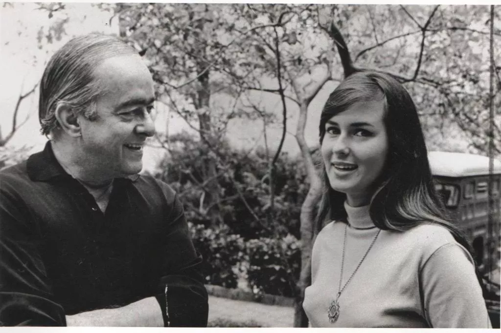

Pouco tempo depois do sucesso da música, várias mulheres começaram a se apresentar como a inspiração para a “Garota de Ipanema”. Toda essa especulação só terminou quando Vinicius de Moraes afirmou que a inspiração para a música foi a adolescente Heloísa Pinheiro.

A música virando hit internacional
A cantora baiana Astrud Gilberto deu voz à versão em inglês de “Garota de Ipanema” em 1964. A versão em inglês contou com os arranjos do consagrado Stan Getz, e a música estourou nos Estados Unidos, encantando um dos cantores mais conhecidos do país, o grande Frank Sinatra, que fez uma regravação em 1967.
Em diversas línguas
“Garota de Ipanema” é uma música querida não só no Brasil, mas também ao redor do mundo. Existem cerca de 170 versões para essa canção, e ela continua a ser regravada por grandes nomes. Um desses nomes é o da britânica Amy Winehouse (1983-2011).